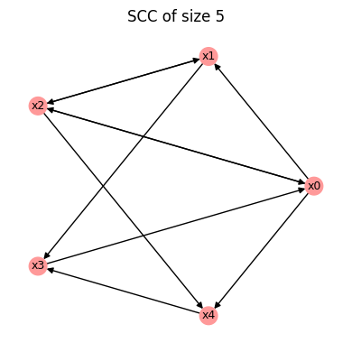
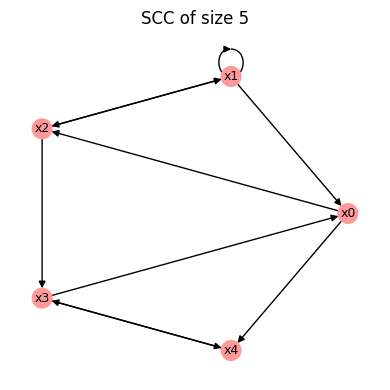
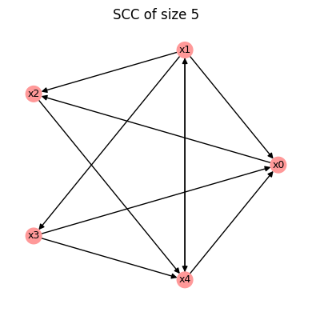
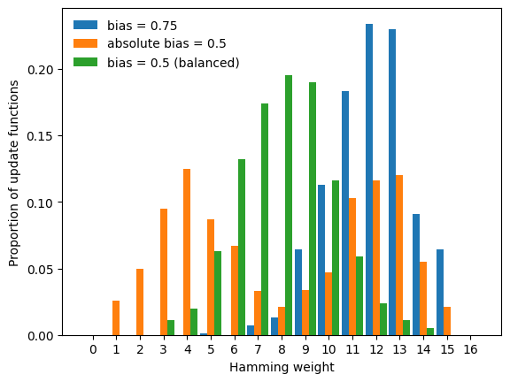

Random Boolean network generation
This tutorial demonstrates how to generate random Boolean networks with controlled structural and functional properties using BoolForge. This ability enables ensemble studies, which are exemplified in the next tutorial.
What you will learn
In this tutorial you will learn how to generate random Boolean networks with
prescribed structural properties (e.g., degree, degree distribution, strongly connected),
prescribed functional properties (e.g., canalization, bias),
It is strongly recommended to complete Tutorials 4 and 5 on random function generation first.
Setup
[1]:
import boolforge as bf
import numpy as np
import matplotlib.pyplot as plt
Generating random wiring diagrams
The function random_network(N, n, *args) generates a random \(N\)-node Boolean network with degree parameter n. The generation follows a two-step process:
A random wiring diagram is created using
random_wiring_diagram(N, n, *args).Random Boolean functions with prescribed properties are generated using
random_function(n, *args), which was discussed in depth in Tutorials 4 and 5.
We first consider only the structural parameters that concern the generation of the random wiring diagram. In the absence of optional arguments, the in-degree distribution is assumed to be constant. That is, each node in the network is regulated by n nodes.
[2]:
N = 5
n = 2
W = bf.random_wiring_diagram(N, n, rng=2)
W.plot();

The argument rng seeds the random number generator, ensuring reproducible results.
The rest of this tutorial describes the various constraints / optional arguments. Each optional argument restricts the family of networks from which random_wiring_diagram() and random_network() samples.
Allowing self-regulation
BoolForge selects the n regulators of each node uniformly at random from the set of all other nodes. Thus, self-regulation is disallowed by default. Setting allow_self_loops=True allows nodes to regulate themselves.
[3]:
N = 5
n = 2
W = bf.random_wiring_diagram(N,n,allow_self_loops=True,rng = 2)
W.plot();

Poisson in-degree distributions
Classical random Boolean network theory (NK Kauffman models) assume a fixed in-degree, the default in BoolForge. However, this is a strong assumption since the in-degree in curated biological Boolean network models often appears approximately Poisson distributed. BoolForge provides the option to generate random wiring diagrams with Poisson distributed in-degree, using the optional parameter indegree_distribution.
[4]:
N = 5
n = 2
W = bf.random_wiring_diagram(N,n,indegree_distribution='poisson',rng = 5)
W.plot();

We see that some nodes (\(x_1\) and \(x_3\)) are only regulated by one node, while others (\(x_0\) and \(x_4\)) possess three regulators each.
When using a Poisson-distributed in-degree, the in-degree of every node is always at least 1. This avoids the artificial creation of identity nodes (with in-degree 0).
Avoiding output nodes
In general, it is possible that some nodes in a generated Boolean network will not regulate other nodes. By setting min_out_degree_one=True, we can force every node to regulate at least one node. That is, output nodes can be disallowed.
Strong connectedness
The wiring diagram of the generated Boolean network may or may not be strongly connected. Setting strongly_connected=True (default False) forces strong connectedness. Uniform sampling among strongly connected networks cannot be achieved by a simple construction method. BoolForge therefore generates candidate networks and rejects them until a strongly connected network is obtained.
Careful: When the number of nodes N is large and the degree n is small, this may take a long time. The number of unsuccessful attempts before raising an error is controlled by the optional parameter max_strong_connectivity_attempts.
Fixed wiring diagrams
All optional parameters discussed thus far describe properties of the wiring diagram. Instead of generating a new wiring diagram, an existing one (e.g., from a curated biological network model) can be passed directly to random_network.
In that case, random_network(I, *args) does not require N and n, because these quantities are inferred from the wiring diagram, provided via optional parameter I. As described in detail in Tutorial 6, I can be either a WiringDiagram object or a list of lists describing the regulators of each node.
For example, using the previously generated wiring diagram, we can write
[5]:
bn = bf.random_network(I=W)
This feature allows multiple Boolean networks with different update functions to be generated on the same wiring diagram.
Specifying functional constraints
Once the wiring diagram is generated, the number of nodes N and the in-degree of each node are determined. In step 2, random_network now repeatedly calls random_function to generate the random Boolean functions. The optional parameters regulating the functional constraints are practically identical to the ones discussed in depth in Tutorial 4, with one important distinction: Most parameters can be sequences of length N, in order to specify distinct functional behavior for the
different nodes.
In the following, we summarize the key concepts.
Parity functions
If parity=True (default False), parity functions (also known as linear functions) are chosen for all nodes. Note that for any degree n, there are only two parity functions.
Canalizing functions
If a specific layer_structure is provided, all functions possess at least these canalizing layers.
[6]:
bn = bf.random_network(N=4,n=3,layer_structure=[1],rng = 2)
for f in bn.F:
print(f,f.get_layer_structure()['LayerStructure'])
[0 1 1 0 0 0 0 0] [1]
[0 0 1 1 0 1 1 1] [1, 2]
[0 0 0 0 0 0 0 1] [3]
[1 1 1 0 1 1 1 1] [3]
As we see, it is however possible for some functions to randomly possess more canalizing variables in a larger and/or more layers. To ensure layer_structure is interpreted as exact layer structure, set exact_depth=True.
[7]:
bn = bf.random_network(N=4,n=3,layer_structure=[1],exact_depth=True,rng = 2)
for f in bn.F:
print(f,f.get_layer_structure()['LayerStructure'])
[0 1 1 0 0 0 0 0] [1]
[1 0 1 1 0 1 1 1] [1]
[1 1 0 1 0 1 1 1] [1]
[0 1 1 0 1 1 1 1] [1]
Rather than specifying the exact layer structure, we can also describe the desired canalizing depth (i.e., the number of conditionally canalizing variables) via depth. As before, the optional argument exact_depth (default False) determines if depth is interpreted as exact canalizing depth, or as minimum canalizing depth.
[8]:
#Boolean network whose rules all have minimal canalizing depth 1
bn1 = bf.random_network(N=4,n=3,depth=1,exact_depth=False,rng = 2)
for f in bn1.F:
print(f.get_canalizing_depth(),f)
print()
#Boolean network whose rules all have exact canalizing depth 1
bn2 = bf.random_network(N=4,n=3,depth=1,exact_depth=True,rng = 2)
for f in bn2.F:
print(f.get_canalizing_depth(),f)
1 [0 1 1 0 0 0 0 0]
3 [0 0 0 0 0 0 1 0]
3 [1 1 0 0 1 1 1 0]
3 [0 1 1 1 0 0 0 0]
1 [0 1 1 0 0 0 0 0]
1 [1 0 0 0 0 0 1 0]
1 [1 1 0 1 0 1 1 1]
1 [0 0 1 0 1 0 0 0]
Most optional parameters (e.g., n, depth, layer_structure, bias, absolute_bias) can also be specified as sequences of length N. In that case, each entry applies to one node in the network, allowing different functional constraints for different nodes.
[9]:
bn = bf.random_network(
N=4,
n=[3,3,2,2],
depth=[3,1,2,0],
exact_depth=True,
rng=2
)
for f in bn.F:
print(f.get_canalizing_depth(),f)
3 [1 1 1 1 0 1 1 1]
1 [1 1 0 1 0 1 1 1]
2 [1 1 0 1]
0 [0 1 1 0]
Biased functions
When parity=False and all canalization parameters are also at their default values, random_network generates each update function with a specified bias, i.e.
probability of output 1:
biasprobability of output 0:
1-bias
The unbiased case (bias=0.5) is the default. Instead of the bias, users can also specify the absolute bias to generate functions with a bimodal Hamming weight distribution. For BoolForge to use the parameter provided via absolute_bias, use_absolute_bias=True is required. The default is use_absolute_bias=False, i.e., by default bias is used, resulting in a unimodal Hamming weight distribution.
[10]:
N = 1000 #network size
n = 4 #constant in-degree
bn1 = bf.random_network(N=N,n=n,bias=0.75)
bn2 = bf.random_network(N=N,n=n,absolute_bias=0.5,use_absolute_bias=True)
bn3 = bf.random_network(N=N,n=n,absolute_bias=0.5)
bns = [bn1,bn2,bn3]
labels = ["bias = 0.75", "absolute bias = 0.5", "bias = 0.5 (balanced)"]
possible_hamming_weights = np.arange(2**n + 1)
width = 0.3
fig, ax = plt.subplots()
for i,bn in enumerate(bns):
count = np.zeros(2**n + 1)
for f in bn.F:
count[f.hamming_weight] += 1
ax.bar(possible_hamming_weights - width + i * width,
count / N,
width=width, label=labels[i])
ax.legend(frameon=False)
ax.set_xticks(possible_hamming_weights)
ax.set_xlabel("Hamming weight")
ax.set_ylabel("Proportion of update functions");

Summary
In this tutorial you learned how to:
generate random wiring diagrams with prescribed structural constraints,
generate, for each node in a wiring diagram, random update functions with prescribed functional constraints.
In the next tutorial, we will explore several situations, in which the ability to generate large ensembles of controlled random Boolean networks is very useful.